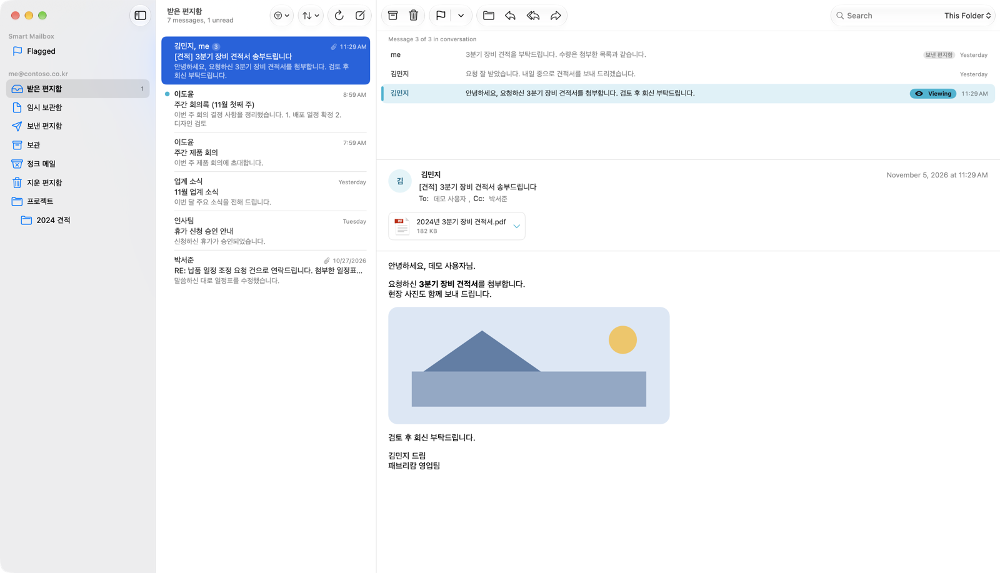
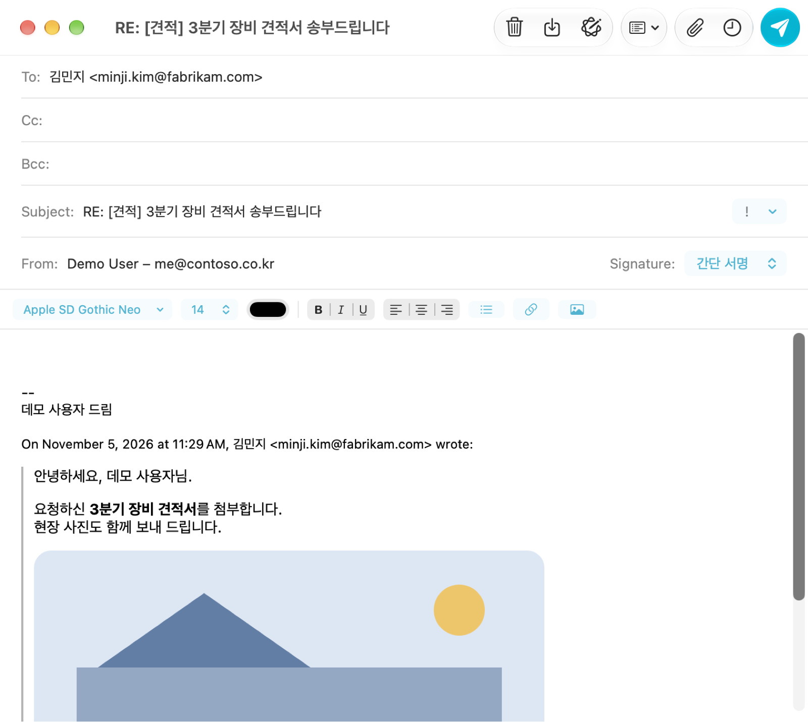

FAKUKU Mail Help
macOS 26 or later · Microsoft Exchange Online, iCloud, Gmail
Getting started
FAKUKU Mail reads and writes your mail where it lives, on the server. You can add several accounts and use them in one window.
Microsoft Exchange (work mail)
- On the first screen, enter your work email address and click Sign In. If you already use the app, choose Settings > Accounts > + > Microsoft Exchange….
- Enter your password and approve on your phone in the Microsoft sign-in window. The app never sees your password.
- If you see “Admin approval required,” click Copy Admin Approval Link and send it to your IT administrator. Your company approves the app once.
iCloud
- At account.apple.com > Sign-In and Security > App-Specific Passwords, create a password.
- In Settings > Accounts > + > iCloud…, enter your name, iCloud address, and the app-specific password (not your Apple Account password).
Gmail
- Turn on 2-Step Verification for your Google Account.
- Create an app password in Google Account > Security > App passwords.
- Make sure IMAP is on in Gmail settings > Forwarding and POP/IMAP.
- In Settings > Accounts > + > Gmail…, enter your address and the app password.
Gmail’s “All Mail” is used as the Archive mailbox. Starred and Important labels aren’t shown in the sidebar (see starred mail in Flagged).
Removing an account
In Settings > Accounts, select the account and click −. This removes the account’s offline copy and sign-in from this Mac only; mail on the server stays.
The window

Sidebar
- Smart Mailboxes: All Inboxes (with two or more accounts), Flagged (by color), and smart mailboxes you create.
- VIPs: mail from people you mark as VIP.
- Account sections: each account’s mailboxes. Hover over a section name to show the New Mailbox button and the collapse arrow; a collapsed section shows its inbox unread count.
- On My Mac: mailboxes imported from files, stored only on this Mac.
Message list
- View > Organize by Conversation (⌃⌘T) groups a conversation into one row with a count.
- Swipe a row left or right with two fingers to show actions. By default, swipe right = Read, full swipe left = Delete. Change this in Settings > Viewing.
- Use Filter (Unread, Flagged, Attachments, High Priority, To or Cc Me, Mentions) and Sort in the View menu.
Message
- The conversation strip above the message shows the rest of the conversation, including your replies in other mailboxes, and highlights the message you’re reading. Drag its bottom edge or press ⌥⌘↓ / ⌥⌘↑ to resize it.
- Hover over a name in the header to show ⌄; click it to copy the address, mark as VIP, or show the contact card.
- Attachments appear as cards under the subject. Click to Quick Look, use ⌄ to open or save.
Reading and organizing
| To | Do this |
|---|---|
| Mark read / unread | Message > Mark as Read (⇧⌘U), or swipe right |
| Flag | ⇧⌘L. Choose a color in Message > Flag Color |
| Archive | ⌃⌘A. Moves to the account’s Archive (Gmail removes it from Inbox) |
| Delete | Delete (⌫). Moves to Deleted Items / Trash |
| Move | Drag rows onto a mailbox, Message > Move… (⇧⌘M), Move Again to Same Folder (⌃⌘M) |
| Undo | ⌘Z returns moved, archived, or deleted mail to its mailbox |
| Junk | ⇧⌘J moves to Junk so the server learns |
| Block sender | ⌃⌘B. Their mail goes to Deleted Items from now on |
| Mute conversation | ⌃⇧M. No notifications for new mail in it |
| Open in a new window | ⌘O or double-click |
| Raw Source | ⌥⌘U shows all headers and the MIME source |
| ⌘P | |
| New, rename, delete mailboxes | Mailbox menu, or Control-click a mailbox |
Search and smart mailboxes
- Type in the toolbar search field (⌥⌘F) and choose This Folder or All Folders. All Folders searches every account and your imported mail in On My Mac.
- Mailbox > New Smart Mailbox… (⌥⌘N) saves conditions — sender, subject, unread, flagged, attachments, high priority, VIP, received in the last days, mailbox — and shows them like a mailbox.
- VIP: select a message and choose Message > Add Sender to VIPs… (⌃⌘V). You can give each VIP a name and icon.
Writing mail

- New Message ⌘N, Reply ⌘R, Reply All ⇧⌘R, Forward ⇧⌘F, Forward as Attachment ⌥⇧⌘F, Send Again ⌥⌘D. Send ⇧⌘D.
- Recipients: type an address and press comma, semicolon, or Return to make a name token. Addresses you’ve used before are suggested (choose one with the arrow keys). Use a token’s ⌄ menu to copy or remove it; double-click to edit.
- Show or hide Cc, Bcc, Reply-To, and Priority with the View menu or the header fields button (Bcc ⌥⌘B).
- From: with two or more accounts, choose which one sends. Replies and forwards default to the account that received the original.
- Formatting: Format menu (Bold ⌘B, Italic ⌘I, Underline ⌘U, lists, alignment, quote level). Tab indents in the body. Writing Tools (⌃⌘W) can rewrite your text.
- Signatures: create several in Settings > Signatures and choose a default for new mail, replies, and forwards.
- Outside addresses: list your company domains in Settings > Composing; recipients outside them are shown in orange.
- Undo Send: choose 5–20 seconds in Settings > Composing, then cancel from the bar at the top of the window (Esc).
- Send Later (Exchange): choose Send Later… (⌥⇧⌘D) in the compose toolbar; the server sends it at that time.
- Drafts are saved as you write. You’re asked whether to save when you close the window.
- Large attachments: Exchange uploads attachments over 4 MB separately (up to 150 MB per file). iCloud accepts about 20 MB per message, Gmail 25 MB.
Attachment fix (Korean file names and inline images)
When Exchange mail is sent from other clients, Korean attachment names can arrive garbled, and images in the body may not show as attachments. FAKUKU Mail fixes this before sending.
- File names are written in the standard form (NFC, RFC 2231) so they show correctly in Outlook, Naver, Daum, and others.
- Send inline images as regular attachments (on by default). Images in signatures and quotes stay in the body; small images below the KB threshold can stay inline.
- EUC-KR file names: turn on only for older Korean systems.
- Set defaults in Settings > Composing and turn it off per message in the compose window.
Individual sending
Message > Individual Sending… (⌥⇧⌘M) sends the same message to many people one at a time, so no one sees the other recipients.
- Templates: save a subject and body with placeholders such as
{{name}}. - Groups: build a recipient list or import a CSV. Column names that match placeholders are filled in per person.
- Send: send yourself a test first, then send. You can add an unsubscribe line.
Meetings and Mac Calendar
- Exchange meeting invitations show an Accept · Tentative · Decline bar. After you answer, the app checks that the server calendar was updated.
- Mac Calendar: turn on Add accepted meetings to Calendar on this Mac in Settings > Accounts > Account Information. Accepted and tentative meetings are added to the calendar you choose; declining removes what the app added. Duplicates — already there, or arriving later through Exchange sync — are cleaned up.
- Add one yourself with Message > Add to Calendar (⌥⌘K).
- Add Test Event in Settings checks calendar access.
Invitations received in iCloud or Gmail (.ics) don’t show the meeting bar yet.
Rules and automatic replies (Exchange)
- Settings > Rules: move, mark read, set importance, or delete by sender or subject words. These are Exchange server rules, so they run even when the app is closed and show in Outlook.
- Settings > Automatic Replies: turn on an out-of-office reply with dates and separate text for people inside and outside your organization.
Import and export mailboxes
- File > Import Mailboxes… (⌥⌘O) imports a
.mbox(or a folder of .emlx files) from Mail or other apps into On My Mac. It’s stored and searchable on this Mac, independent of any server. - Mailbox > Export Mailbox… (⌥⌘E) saves the current mailbox as
.mboxfor backup or moving to another app.
Notifications, Siri, Shortcuts
- New mail notifications: Settings > Notifications. Exchange is checked at the interval in Settings > General (2 minutes by default); iCloud and Gmail are checked as soon as the server reports new mail. The Dock badge (Settings > General) is the unread count of all inboxes.
- Siri (in English): “How many unread emails do I have in FAKUKU Mail,” “Get new mail in FAKUKU Mail,” “Read my latest email in FAKUKU Mail,” “Flag this email in FAKUKU Mail,” “Reply to this email in FAKUKU Mail,” “Show VIP mail in FAKUKU Mail.”
- The same actions appear under FAKUKU Mail in the Shortcuts app for automations.
Privacy and security
- Your mail stays on each provider’s server (Microsoft, Apple, Google), and the app talks only to those servers. Nothing is sent to the developer.
- Sign-in tokens and app passwords are kept only in your Mac’s Keychain.
- Scripts in received HTML never run.
- Remote content (Settings > Viewing > Privacy): the default, Protect Mail Activity, removes tracking pixels and loads other remote images without cookies, so senders can’t tell when you opened their mail. Block all remote content loads none; use Message > Load Remote Images (⇧⌘I) for one message.
- Offline: recent lists and messages you opened are kept on this Mac so you can read them without a network (Settings > General > Offline; removed when you remove the account).
Details: Privacy Policy
Settings (⌘,)
| Tab | Main options |
|---|---|
| General | Accent color, check for new mail, Dock badge, offline copy |
| Accounts | Add and remove accounts, description (sidebar name), mailbox behaviors, server settings, Mac Calendar |
| Junk Mail | How junk is handled, unblock senders |
| Fonts & Colors | List font size, message font, fixed-width plain text, quote level colors |
| Viewing | Preview lines, bold unread, when to mark read, conversations, prefetch, swipe actions, remote content |
| Composing | Spelling, automatically include me, company domains, quote original, attachment fix defaults, Undo Send |
| Signatures | Create and style signatures, defaults per situation |
| Rules · Automatic Replies | Exchange server rules, out-of-office reply |
| Notifications | New mail notifications, sound |
Keyboard shortcuts
| New Message | ⌘N |
| Reply / Reply All | ⌘R / ⇧⌘R |
| Forward / as Attachment | ⇧⌘F / ⌥⇧⌘F |
| Send Again | ⌥⌘D |
| Individual Sending | ⌥⇧⌘M |
| Get All New Mail | ⇧⌘N |
| Search | ⌥⌘F |
| ⌘P | |
| Message | |
|---|---|
| Mark Read / Unread | ⇧⌘U |
| Flag | ⇧⌘L |
| Archive | ⌃⌘A |
| Delete | ⌫ |
| Move… / Move Again | ⇧⌘M / ⌃⌘M |
| Mark as Junk | ⇧⌘J |
| Block Sender | ⌃⌘B |
| Add to VIPs | ⌃⌘V |
| Mute | ⌃⇧M |
| Open in New Window | ⌘O |
| Quick Look Attachments | ⌘Y |
| Raw Source | ⌥⌘U |
| Load Remote Images | ⇧⌘I |
| Add to Calendar | ⌥⌘K |
| Undo | ⌘Z |
| Mailboxes and view | |
|---|---|
| New Mailbox | ⌃⌘N |
| New Smart Mailbox | ⌥⌘N |
| Previous / Next Mailbox | ⌃⌘[ / ⌃⌘] |
| Mark All as Read | ⌥⇧⌘C |
| Erase Deleted Items | ⌥⇧⌘⌫ |
| Erase Junk Mail | ⌥⌘J |
| Import / Export Mailbox | ⌥⌘O / ⌥⌘E |
| Organize by Conversation | ⌃⌘T |
| Taller / Shorter Conversation | ⌥⌘↓ / ⌥⌘↑ |
| Clear All Filters | ⌥⌘L |
| Message Viewer | ⌘0 |
| Compose window | |
|---|---|
| Send | ⇧⌘D |
| Bcc / Reply-To field | ⌥⌘B / ⌥⌘R |
| Bold / Italic / Underline / Strikethrough | ⌘B / ⌘I / ⌘U / ⌃⌘X |
| Bulleted / Numbered List | ⇧⌘7 / ⇧⌘8 |
| Align Left / Center / Right | ⌘{ / ⌘| / ⌘} |
| Indent / Outdent | ⌘] / ⌘[ |
| Increase / Decrease Quote Level | ⌘' / ⌥⌘' |
| Writing Tools | ⌃⌘W |
| Send Later (Exchange) | ⌥⇧⌘D |
Troubleshooting
“Admin approval required” (Exchange)
Your company requires IT to approve new apps. Click Copy Admin Approval Link on the sign-in screen and send it to your IT administrator. Once approved, everyone at your company can sign in.
I can’t sign in to iCloud or Gmail
Use an app-specific password / app password, not your account password. Gmail also needs 2-Step Verification and IMAP turned on. If you created a new app password, remove the account (−) and add it again.
“Too many requests”
Exchange is briefly limiting requests. The app waits as long as the server asks and tries again. After a minute or two, try Get All New Mail (⇧⌘N).
“Message not found”
A phone, another computer, or a server rule moved or deleted it. The app refreshes the list quietly.
Recipients see garbled Korean attachment names
Check that Attachment fix is on in the compose window. For older Korean systems, turn on EUC-KR file names in Settings > Composing.
I don’t get new mail notifications
Check Settings > Notifications and System Settings > Notifications > FAKUKU Mail. Muted conversations (⌃⇧M) don’t notify.
Accepted meetings don’t appear in Mac Calendar
In Settings > Accounts > Account Information, check that Access says Allowed and click Add Test Event. If it’s denied, turn on FAKUKU Mail in System Settings > Privacy & Security > Calendars.
Siri doesn’t understand
Open the app once, then include the app name: “… in FAKUKU Mail.” You can run the actions from the Shortcuts app to see any error.
Remove all mail from this Mac
Removing an account (−) in Settings > Accounts deletes its offline copy and sign-in. Delete imported mailboxes by Control-clicking them > Delete Mailbox.
Contact
Report bugs or ideas in GitHub Issues. Include the app version (FAKUKU Mail > About FAKUKU Mail) and a screenshot.